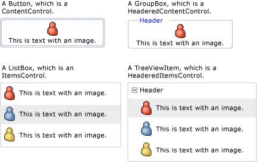
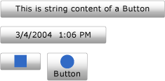
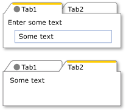
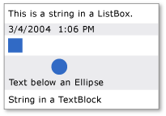
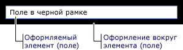

Модель содержимого WPF
Windows Presentation Foundation (WPF) — это презентационная платформа, которая предоставляет множество элементов и типов, схожих с элементами управления основной целью которого является отображение различных типов содержимого. Чтобы определить, какой элемент управления использовать или от какого элемента управления выполнять наследование, вы должны понимать, какие виды объектов лучше всего может отображать конкретный элемент управления.
В этом разделе приводятся обобщенные сведения о модели содержимого для элементов управления WPF и типов, схожих с элементами управления. Модель содержимого описывает, какое содержимое может использоваться в элементе управления. Также в этом разделе перечисляются свойства содержимого для каждой модели содержимого. Свойство содержимого — это свойство, которое используется для хранения содержимого объекта.
Классы с произвольным содержимым
Некоторые элементы управления могут содержать объекты любого типа, например строку, DateTime объекта, или UIElement являющийся контейнером для дополнительных элементов. Например Button может содержать изображение и некоторый текст; или CheckBox может содержать значение DateTime.Now.
WPF имеется четыре класса, которые могут содержать произвольное содержимое. В следующей таблице перечислены классы, которые наследуют от Control.
| Класс с произвольным содержимым | Content |
|---|---|
| ContentControl | Один произвольный объект. |
| HeaderedContentControl | Заголовок и один элемент, которые являются произвольными объектами. |
| ItemsControl | Коллекция произвольных объектов. |
| HeaderedItemsControl | Заголовок и коллекция элементов, являющиеся произвольными объектами. |
Элементы управления, производные от этих классов, могут содержать тот же тип содержимого и обрабатывать содержимое аналогичным образом. На следующем рисунке показан один элемент управления из каждой модели содержимого, который содержит изображение и некоторый текст:

Элементы управления, содержащие один произвольный объект
ContentControl Класса содержит один элемент произвольного содержимого. Его свойство содержимого — Content. Следующие элементы управления наследуют ContentControl и используют его модель содержимого:
На следующем рисунке показано четыре кнопки, Content присваивается строка DateTime объекта, Rectangleи Panel , содержащий Ellipse и TextBlock:

Например, как задать Content свойство, см. в разделе ContentControl.
Элементы управления, содержащие заголовок и один произвольный объект
HeaderedContentControl Класс наследует от ContentControl и отображает содержимое с заголовком. Он наследует свойство content Content, из ContentControl и определяет Header свойство, имеющее тип Object; таким образом, оба могут быть произвольными объектами.
Следующие элементы управления наследуют HeaderedContentControl и используют его модель содержимого:
На следующем рисунке показаны два TabItem объектов. Первый TabItem имеет UIElement объектов как Header и Content. Header Присваивается StackPanel , содержащий Ellipse и TextBlock. Content Присваивается StackPanel , содержащий TextBlock и Label. Второй TabItem имеет строку в Header и TextBlock в Content.

Пример создания TabItem объектов, см. в разделе HeaderedContentControl.
Элементы управления, содержащие коллекцию произвольных объектов
ItemsControl Класс наследует от Control и может содержать несколько элементов, таких как строки, объекты или другие элементы. Его свойства содержимого — ItemsSource и Items. ItemsSource обычно используется для заполнения ItemsControl со сбором данных. Если вы не хотите использовать коллекцию для заполнения ItemsControl, можно добавить элементы с помощью Items свойство.
Следующие элементы управления наследуют ItemsControl и используют его модель содержимого:
На следующем рисунке показано ListBox , содержащий следующие типы элементов:

Элементы управления, содержащие заголовок и коллекцию произвольных объектов
HeaderedItemsControl Класс наследует от ItemsControl и может содержать несколько элементов, таких как строки, объекты, или другие элементы и заголовок. Он наследует ItemsControl свойства, содержимого ItemsSource, и Items, и он определяет Header свойство, которое может быть произвольный объект.
Следующие элементы управления наследуют HeaderedItemsControl и используют его модель содержимого:
Классы, содержащие коллекцию объектов UIElement
Panel Класс размещение и упорядочивание дочерних UIElement объектов. Его свойство содержимого — Children.
Следующие классы наследуют от Panel класса и используют его модель содержимого:
Дополнительные сведения см. в разделе Общие сведения о панелях.
Классы, влияющие на внешний вид объекта UIElement
Decorator Класс применяет визуальные эффекты или вокруг один дочерний элемент UIElement. Его свойство содержимого — Child. Следующие классы наследуют от Decorator и используют его модель содержимого:
На следующем рисунке показано TextBox с (снабжен) Border вокруг него.

Элемент управления TextBlock с границей вокруг него
Классы, предоставляющие визуальную обратную связь об объекте UIElement
Adorner Предоставляет пользователю визуальные подсказки. Например, использовать Adorner для добавления функциональных обработчиков к элементам или предоставления сведения о состоянии об элементе управления. Adorner Класс предоставляет платформу, которые можно создавать собственные декоративные элементы. WPF не предоставляет никаких реализованных декоративных элементов. Дополнительные сведения см. в разделе Общие сведения о декоративных элементах.
Классы, позволяющие пользователям вводить текст
WPF предоставляет три основных элемента управления, которые позволяют пользователям вводить текст. Каждый из этих элементов управления отображает текст по-разному. В следующей таблице приведены эти три элемента управления с поддержкой ввода текста, их возможности по отображению текста и свойства, которые содержат текст этого элемента управления.
| Элемент управления | В каком виде отображается текст | Свойство содержимого |
|---|---|---|
| TextBox | Обычный текст | Text |
| RichTextBox | Форматированный текст | Document |
| PasswordBox | Скрытый текст (символы скрыты) | Password |
Классы, отображающие пользовательский текст
Некоторые классы могут использоваться для отображения простого или форматированного текста. Можно использовать TextBlock для отображения текста небольшого объема. Если вы хотите отображать большие объемы текста, используйте FlowDocumentReader, FlowDocumentPageViewer, или FlowDocumentScrollViewer элементов управления.
TextBlock Имеет два свойства содержимого: Text и Inlines. Если вы хотите отображать текст с единообразным форматированием Text свойство является оптимальным решением. Если вы планируете использовать разное форматирование текста, используйте Inlines свойство. Inlines Свойство — это коллекция Inline объекты, которые определяют способ форматирования текста.
В следующей таблице перечислены свойства содержимого для FlowDocumentReader, FlowDocumentPageViewer, и FlowDocumentScrollViewer классы.
| Элемент управления | Свойство содержимого | Тип свойства содержимого |
|---|---|---|
| FlowDocumentPageViewer | Document | IDocumentPaginatorSource |
| FlowDocumentReader | Document | FlowDocument |
| FlowDocumentScrollViewer | Document | FlowDocument |
FlowDocument Реализует IDocumentPaginatorSource интерфейс; таким образом, все три класса могут принимать FlowDocument как содержимое.
Классы, выполняющие форматирование пользовательского текста
TextElement и связанные с ним классы позволяют вам форматировать текст. TextElement объекты содержат и форматируют текст в TextBlock и FlowDocument объектов. Два основных типа TextElement объекты являются Block элементов и Inline элементов. Объект Block представляет блок текста, например, абзац или список. Inline Элемент представляет собой часть текста в блоке. Многие Inline классы задают форматирование текста, к которому они применяются. Каждый TextElement имеет собственную модель содержимого. Подробнее см. в разделе Общие сведения о модели содержимого TextElement.